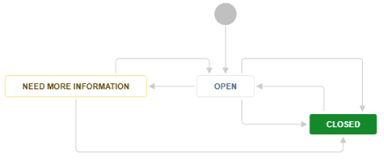

Enhancement Requests in Jira Agile¶
Summary¶
In Jira Agile, an Enhancement Request (ER) is used to enter a request for new functionality. This request is then triaged and the ER is either transformed into a work item (Bug/Defect, Story, or Epic) or is rejected.
This guideline details how to manage Enhancement Requests using Jira Agile.
Workflow¶
An Enhancement Request is never worked on directly. An ER must be transformed to a Bug, a Story, or an Epic. The item can then be scheduled and worked on.
The ER has a simple workflow to encourage triage and transformation.

The ER starts in the Open state. As part of the team’s Governance, all open ERs will be reviewed and acted upon:
Send back for more information, by moving the state to Need More Information and setting Assignee to the Reporter
Transform the ER to a bug if it is a defect
Approve by setting Approved to Yes
Reject by moving the state to Closed with a resolution of Rejected
Approved ERs will eventually be transformed to either a story or an epic. This should be done when the team plans on working on the ER within 3-4 months. Transforming ERs to work items too soon can make the backlog hard to manage.
An ER can be withdrawn at any time.
Transformation¶
When the ER is transformed, it may get a new ID. This is not a problem because the old ID will redirect to the new ID, so anyone watching the ER will easily be able to follow it.
Which issue type should I use?¶
Does the ER actually report a defect? => Bug
Will the ER take longer than a sprint? Is the ER roadmap worthy? => Epic
Otherwise => Story
When should I transform the Enhancement Request?¶
Bug/Defect: As soon as it is determined the ER is actually a bug, it should be transformed to a bug/defect.
_ Story/Epic: An ER should have the Approved field checked before it is transformed into a Story or an Epic. The team may also decide to leave the request as an ER until it is being considered for implementation. This allows the team to control the size of their backlog. If the ER is to become an Epic, it will also need to move to the program project.
Transforming an Enhancement Request¶
In the ER page, click More -> Move.
Change Issue Type to the relevant type and click Next. If the ER is changing to an epic, change the project to the program project associated with the ER’s execution project.
Change the issue status as needed and click Next.
Fill in any now-mandatory fields.
Put the reporter’s name into the Acceptor field.
Click Move.
Edit the newly transformed issue and fill in any appropriate fields.
Refer to Stories in Jira Agile, Epics in Jira Agile, or Defects in Jira Agile on creation to ensure you fill in all the appropriate fields.
Make sure the state of the new epic or story is Backlog.
Managing/Reporting¶
There is no special reporting for ERs. Simple queries should be used to make sure Open ERs have the Approved field set to Yes. The governance team should also monitor Approved items that have not been updated in 6 months. These should be re-evaluated to make sure they are still valid and that the priority is still the same. If an ER is still valid, the governance team should add a comment explaining the delay.
Change Log¶
Date |
Change Request ID |
Version |
Change By |
Description |
07/31/2020 |
N/A |
0.1 |
Doina Lepadat |
Initial Draft |